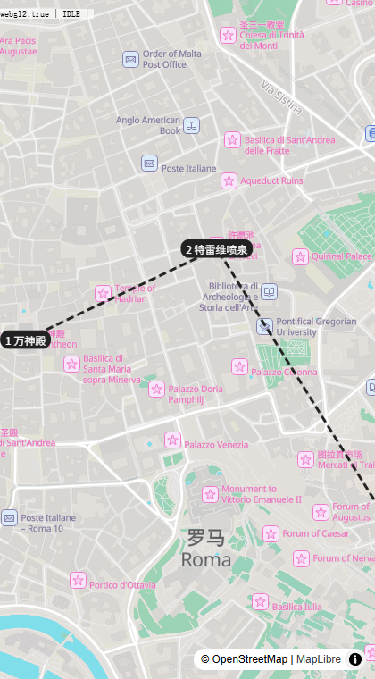
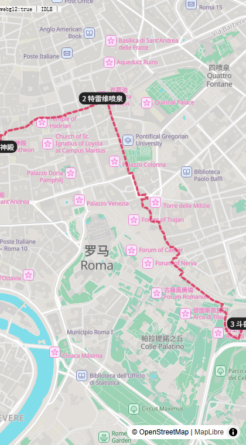

v0.2 · 2026-10-09（按 Codex 审核修订）· 目标：中国大陆可用、可部署、之后能让大陆用户直接打开页面使用 · 对照：首版范围与页面职责 · 低保真原型
技术方向可行，可以继续做；但还不能说"所有板块都已验证"。准确的状态是：地图和外部数据源已经实测，其余板块完成了方案筛选，核心的行程生成和实际部署还没验证。架构思路：大陆用户的浏览器只访问我们自己的域名，海外数据（地图、地点、天气、百科图片）由后端获取并缓存，大模型用国内厂商的接口。
tech-spike/raw/。香港服务器同时能访问国内大模型和海外数据源，且不需要 ICP 备案，适合作品阶段。代价是大陆访问速度不如国内服务器，需要上线后实测（第 4、6 节）。
| 模块 | 方案 | 实测结果 | 大陆可用性 | 状态 |
|---|---|---|---|---|
| 地图底图 | MapLibre GL + Protomaps 底图，按城市切出 PMTiles 文件，放在自己的存储里 | 罗马城区（约 13×11 km，0–15 级）= 12 MB，299 个切片；本地渲染成功，有中文城市名、地点标记（见第 5 节截图）。浏览器用 Range 请求只取看到的部分 | 文件自托管，不依赖境外服务。存储必须支持 Range 请求，跨域时要配 CORS。字体和图标也要自托管；中文字形可直接用手机系统字体 | 已验证 |
| 地点搜索 / 坐标 | 为每个支持的城市预先建"地点库"：用 Overpass 或 OSM 数据文件批量提取（Nominatim 公共接口不允许批量抓取和自动补全），用户搜索查自己的库 | Nominatim 单次查询：万神殿、Sant'Eustachio 咖啡馆坐标准确；Photon 对斗兽场只返回同名街道。Overpass 一次提取罗马 3,437 个景点 / 餐厅 / 咖啡馆 | 后端调用，前端不直连 | 数据源已验证 建库流程未验证 |
| 地点详情 | OSM 标签（营业时间、是否收费）+ Wikidata（中文名、配图）+ 中文维基摘要 | 万神殿返回：中文名"万神殿"、营业时间 Mo-Sa 08:30-19:15; Su 09:00-17:45、收费、Wikidata 编号及配图文件名。罗马地点库中仅 25% 有营业时间，18% 有 Wikidata，55 个自带中文名 → 不足以直接据此安排行程，见第 3 节 | 维基百科和维基图片在大陆无法直接访问 → 后端获取，图片转存到自己的存储 | 已验证 |
| 市内路线与耗时 | OSRM / OpenRouteService（步行、驾车） | FOSSGIS 公共服务器（routed-foot）：万神殿→特雷维喷泉 679 m / 9 分钟，平均 4.5 km/h；对照组同一起终点驾车 2.9 km（单行道绕行）、21 km/h → 确认是步行配置。路线形状沿街道（第 5 节） | 后端调用。公共服务器不能用于正式产品，需换成 OpenRouteService 免费额度（需 key）或自建，换了之后要重新测 | 公共服务器已验证 公共交通见第 3 节 |
| 天气 | Open-Meteo：近期（约 16 天内）用预报；远期用历史天气接口汇总往年同期，只作参考，不据此判断哪天下雨；备选和风天气（国内） | 罗马 3 天预报正常。历史同期：2021–2025 年 3 月共 155 天，平均最高 16.7°C、最低 6.8°C，32% 的天数降水 ≥1 mm。修正：v0.1 写的"2027 年 3 月历史气候"实际调用的是气候模型对未来的模拟，不是历史数据，产品不使用 | 后端调用；和风天气接口可连通（需 key） | 已验证 |
| 行程生成（大模型） | DeepSeek / 通义千问 / 智谱 / 豆包，都兼容 OpenAI 接口，可切换。输出结构化 JSON | 只确认四家服务在线（无 key 返回 401）。调用、结构化输出、质量、耗时、费用均未测 | 国内厂商，大陆可用 | 需 key 实测 |
| 小红书截图识别 | 视觉模型（通义千问 VL 等）读截图 → 抽地点名 → 匹配地点库 | 未测 | 国内厂商，大陆可用 | 需 key 实测 |
| 后台生成 | 后端任务队列 + 前端轮询进度；离开页面不中断 | 方案成熟，未验证：刷新或关掉页面后能否恢复进度、失败重试、结果保存 | — | 待验证 |
| 导出 | 长图：前端截图库（html-to-image 等）；Word：docx 库前端生成；Markdown：复制到剪贴板 | 相关库可从国内 npm 镜像安装，打包进自己的 JS，运行不依赖外部服务。未验证：长图里能否包含地图（WebGL 画布截图容易变空白）、手机上长图会不会生成失败 | 微信内置浏览器不能下载文件 → 见第 3 节 | 待验证 需调整 |
| 数据保存 | 首版不做登录，行程存在浏览器本地（IndexedDB） | — | 避免手机号登录带来的实名、短信、隐私合规成本 | 建议 |
| 城际交通 / 订单 | 不接票务系统；AI 给出车次类型与耗时估算，用户手动录入已订车次，跳转官方售票网站 | — | — | 与原型一致 |
| 导航 | 跳转 Google 地图 / Apple 地图（用户在国外时使用） | — | 只是外链，不影响国内打开页面 | 可行 |
Nominatim 公共服务限制每秒 1 次请求，也不允许批量抓取。改为：每个支持的城市用 Overpass 或 OSM 数据文件批量提取景点和餐厅，补齐中文名（Wikidata 中文名 + 大模型翻译，结果缓存），存成自己的地点库。生成时让大模型从库里选，可以减少编造地点、加快查询，但不能保证都对：
OSRM / OpenRouteService 只算步行、驾车、骑行。精确的公交地铁路线需要各城市的公交时刻数据和单独的路线服务，首版做不了。地点之间的交通显示为"步行约 9 分钟"或"地铁/公交约 15–20 分钟（估算）"，并提供"在地图中导航"外链。对"候选地点交通比较"的影响：步行、打车距离可以算准，公交只能估算。
OSM 有餐厅的名字、位置、营业时间，但没有评分和评论（Google 地点数据在大陆不可用）。"吃什么"推荐依靠大模型的知识 + 地点库核对餐厅是否存在；详情页不显示评分，显示"来自 OSM 的营业时间，出行前请再确认"。
微信内置浏览器不能下载文件。长图：生成后在页面上全屏显示，提示"长按保存图片"。Word：提示"在浏览器中打开后下载"。Markdown：直接复制到剪贴板。
| 阶段 | 做法 | 优点 | 代价 |
|---|---|---|---|
| 阶段一（推荐先做） | 香港轻量服务器 + 自己的域名 + HTTPS；页面、地图、图片都放在这台服务器（或香港对象存储） | 不用备案，几天就能上线；能同时访问国内大模型和海外数据 | 大陆访问速度和稳定性要实测；微信里打开可能出现"非微信官方网页"提示 |
| 阶段二（如有需要） | 大陆服务器 + 已备案域名放前端和地图文件；后端仍在香港 | 大陆访问最快最稳 | ICP 备案通常需要 1–3 周；个人备案网站能否提供 AI 交互功能有不确定性 |
大致费用（估算，以下单时为准）：香港轻量服务器每月几十元；域名每年几十元；每个城市的地图约 10–30 MB，存储费用可以忽略；大模型按用量计费，单次行程生成预计几分钱到几毛钱，需用 key 实测。
不建议用 Vercel、Cloudflare Pages、GitHub Pages：它们的默认域名在大陆经常无法访问或很慢。


做法：从 Protomaps 全球底图（约 139 GB，2026-10-08 版）中只切出罗马城区，得到 12 MB 的单个文件；用本地服务器提供，MapLibre 渲染，叠加 3 个编号地点。第一张图的虚线是三点直接相连，只验证了路线图层能显示；第二张图才是沿街道的实际路线。
看到的：街道、绿地、河流清晰；"罗马"、"万神殿"、"特雷维喷泉"等有中文名，其余多为意大利语原名 — 所以我们自己的地点标记和卡片要用地点库里的中文名，不能依赖底图。
沿街道的路线（追加验证）：路线服务除了距离和时间，还会返回整条路线的形状。万神殿→特雷维喷泉（679 m，9 分钟）、特雷维喷泉→斗兽场（1.8 km，24 分钟）两段都沿街道画出，见第二张图（复现：tech-spike/map-rome/index-route.html）。驾车同理。公共交通：OSM 里有罗马的地铁 A/B 线和有轨电车线路的形状（共 25 条），可以按"走到车站 → 沿地铁线 → 走到目的地"画出大致形状，但换乘和时刻仍是估算。
上线前要改：测试页的字体和图标文件还指向 github.io（大陆不稳定），正式版要改成自托管。复现步骤见 tech-spike/map-rome/README.md。
以下是待核对项，不代表已经合规。
以上是技术层面的整理，不是法律意见。